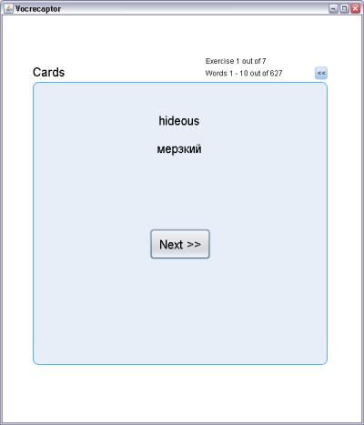
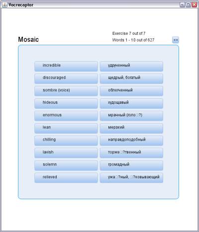

|
|
Vocrecaptor on twitter Vocrecaptor discussion group |
||
  |
|||
Vocrecaptor Exercises v1.2.0Vocrecaptor Exercises is written in JavaFX, works on all platforms and requires Java Runtime Environment (JRE) 6 or later and java plugin for your browser.
|
What is Vocrecaptor Exercises?Vocrecaptor Exercises is a JavaFX application that allows you to do exercises on dictionaries created in Vocrecaptor Editor and uploaded to Vocrecaptor Web site. By its JavaFX nature application can be used as a web-browser applet, desktop application or from some mobile devices supporting JavaFX technology. Vocrecaptor Exercises will help you to study words from your dictionary more carefully and memorize them better. You can also do exercises to refresh the words you've learned in your mind.How to work with Vocrecaptor Exercises?
Starting exercisesTo start exercising you can click one of theLaunch applet or Launch application buttons on the left-hand of this page,
on the right side of the start page or on the right side of the Vocrecaptor Web.If you choose Launch applet Exercise will be started in you browser, if you choose Launch application it will be started as a desktop application.
Logging inAfter application or applet is started you get aLogin page:
Account panel On the Account panel you have to choose dictionary to work with, session (?) and category (?).
To back to Login panel press << button.Choose a dictionary you want to exercise and press Exercise button. You will learn words from this dictionary by groups of 10 words in accordance with the order these words have in your dictionary.
For instance, if the group you've chosen consists of 17 words firstly you'll do all exercises for first 10 words, and then
for last 7 words. Each cycle includes 7 exercises in this order: Cards, Definition guessing, Writing,
Definition choosing, Translation guessing, Translation choosing and Mosaic.To stop exercising and go back to account panel press << button.
Exercise "Cards"Carefully read the word (the first one) and its translation (the second one) and try to remember them. After this press Next >> button (or press Space on your keyboard while Next >> button is focused). You'll see the next pair of words. Remember them and so force.
Do this for each word from this group.
Exercise "Definition guessing" After the window opening the countdown timer is started and you have 5 seconds to remember the definition of the word given. If you remember it press Remember button, timer will stop and after 1 seconds the next word will be shown.
Exercise "Writing" In this exercise you have to write a word definition seeing its translation. Here you see the word translation and text field where you have to write definition. To check the word you've written press Check button. The correct answer will be displayed (it'll be hide when you start writing again).
To give you answer press Answer button. If you've entered the word correctly you'll get the next word to write, otherwise you'll get a message that your word is not correctly spelled.Pay you attention that you can guess the word structure by structure of the word masked with asteriks *.
Exercise "Definition choosing" In this exercise a translation is placed at the top of the window. All definitions are given as buttons. You have to choose a correspondent definition by pressing buttons. If the pair "definition-translation" is correct you'll get the next word to choose, otherwise you'll get nothing. Try again. Exercise "Translation guessing"After the window opening the countdown timer is started and you have 5 seconds to remember the translation of the word given. If you remember it press Remember button, timer will stop and after 1 seconds the next word will be shown.
Exercise "Translation choosing"In this exercise a definition is placed at the top of the window. All translation are given as buttons. You have to choose a correspondent translation by pressing buttons. If the pair "definition-translation" is correct you'll get the next word to choose, otherwise you'll get nothing. Try again. Exercise "Mosaic"In the last exercise you have to match definitions and translations of all words from current group. At the left-hand column there are words arranged randomly, at the right-hand column - translations. You have to match all the pairs by pressing the buttons from the opposite columns. Choose the word from, for instance, the left column and press the button. Now you have to choose the word, in this case a translation, from the opposite column and press the button. If you've chosen the pair correctly - the pair will disappear After you do all the exercises for current group of word you'll start do it again for the next group. If you've just finished the last group you'll go back to account panel where you can choose another dictionary to play with. |
||
| Alexey Peskov, 2007-2009 | |||